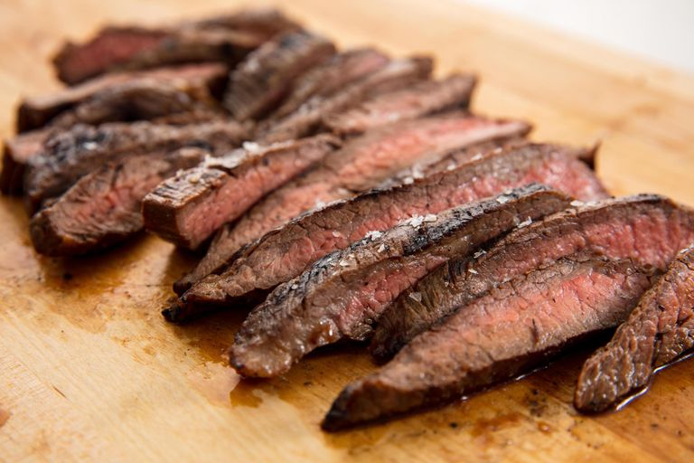
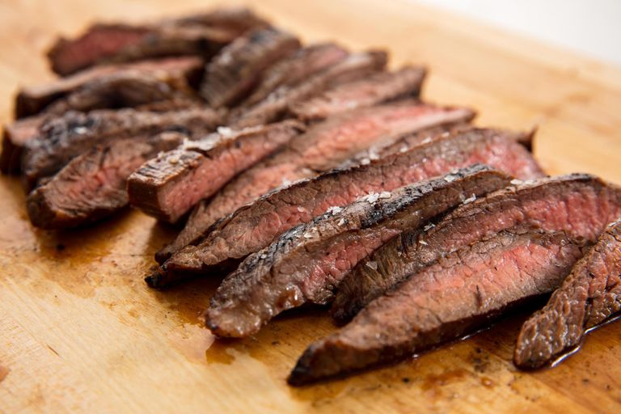

Welcome to PinkyPie's Cookbook!
Within this cookbook I hope to show how much fun an creativity one can have with cooking.
In this website, you can find different types of recipes that will be fun for all ages.
I hope that you have a blast!
Within this cookbook I hope to show how much fun an creativity one can have with cooking.
In this website, you can find different types of recipes that will be fun for all ages.
I hope that you have a blast!
 


"this is a link to show the characters of"My Little Pony" that you will see throughout my website".